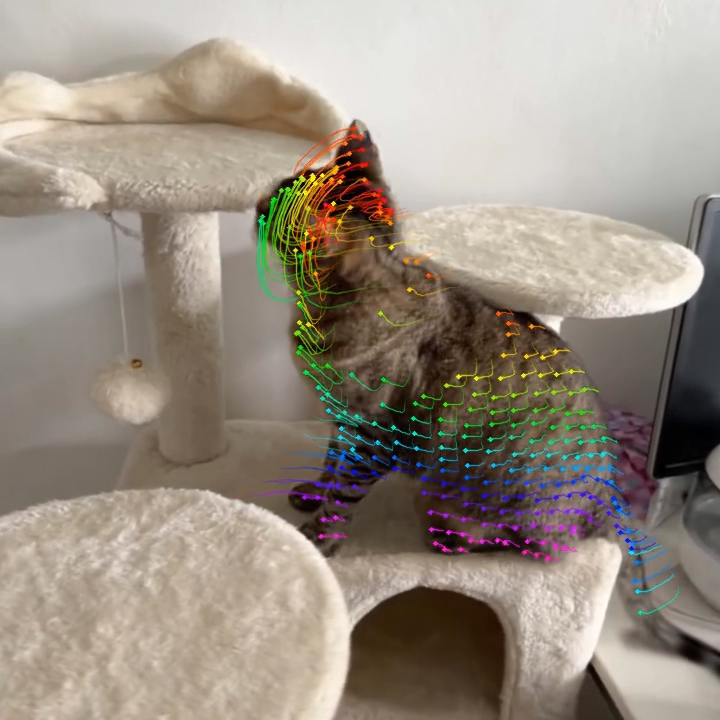
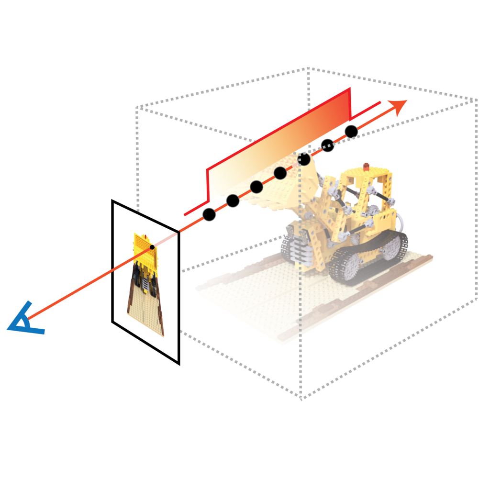

|
Hang Gao
I am a member of technical staff at
xAI, working on multimodal
generative models.
I did my PhD at UC Berkeley advised by
Angjoo Kanazawa. Before that, I studied at Jiao Tong University and
Columbia.
|

|
Grok Imagine 0.9
Imagine team at xAI,
worked on post-training, data and eval
Product Release, 2025
We made and rolled out Grok's first generation of video
models in 3 months from scratch.
|

|
Stable Virtual Camera: Generative View Synthesis with
Diffusion Models
Jensen (Jinghao) Zhou*, Hang Gao*,
Vikram Voleti,
Aaryaman Vasishta,
Chun-Han Yao,
Mark Boss,
Philip Torr,
Christrian Rupprecht,
Varun Jampani
ICCV, 2025
project page
/
arXiv
/
code
/
demo
/
blog
We build a multi-view diffusion model for view synthesis
from as few as a single image.
|

|
SOAR: Self-Occluded Avatar Recovery from a Single
Video
Zhuoyang Pan*,
Angjoo Kanazawa,
Hang Gao*
arXiv, 2024
project page
/
arXiv
/
code
We recover complete human avatars from self-occluded
videos in the wild.
|

|
Shape of Motion: 4D Reconstruction from a Single
Video
Qianqian Wang*,
Vickie Ye*, Hang Gao*,
Jake Austin, Zhengqi Li,
Angjoo Kanazawa
ICCV, 2025
(Spotlight)
project page
/
arXiv
/
code
We propose a method for joint 4D reconstruction and 3D
tracking on internet footages.
|

|
NerfAcc: Efficient Sampling Accelerates
NeRFs
Ruilong Li,
Hang Gao,
Matthew Tancik,
Angjoo Kanazawa
ICCV, 2023
project page
/
arXiv
/
code
We build and release a toolbox for accelerating all kinds
of NeRFs by efficient sampling.
|

|
Monocular Dynamic View Synthesis: A Reality
Check
Hang Gao,
Ruilong Li,
Shubham Tulsiani,
Bryan Russell,
Angjoo Kanazawa
NeurIPS, 2022
project page
/
arXiv
/
video
/
code
We systematically show why and how existing 4D
reconstruction methods don't work well in the wild.
|
|
|
Long-term Human Motion Prediction with Scene
Context
Zhe Cao,
Hang Gao,
Karttikeya Mangalam,
Qi-Zhi Cai, Minh Vo,
Jitendra Malik
ECCV, 2020
(Oral Presentation)
project page
/
arXiv
/
video
/
code
We predict long-term, diverse human motion in 3D by
understanding scene context from an image.
|
|
|
Deformable Kernels: Adapting Effective Receptive Fields
for Object Deformation
Hang Gao*,
Xizhou Zhu*,
Steve Lin,
Jifeng Dai
ICLR, 2020
project page
/
arXiv
/
code
We propose a new convolutional operator that does
attention in the kernel space.
|
|
|
Spatio-Temporal Action Graph Networks
Roei Herzig*,
Elad Levi*,
Huijuan Xu*, Hang Gao, Eli Brosh,
Xiaolong Wang,
Amir Globerson,
Trevor Darrell
ICCV Workshop, 2019
arXiv
We find relational graph useful for action recognition.
|
|
|
Disentangling Propagation and Generation for Video
Prediction
Hang Gao*,
Huazhe Xu,
Qi-Zhi Cai,
Ruth Wang, Fisher Yu,
Trevor Darrell
ICCV, 2019
arXiv
We make a system that propagates seen parts and generates
unseen ones.
|
|
|
Low-shot Learning via Covariance-Preserving Adversarial
Augmentation Networks
Hang Gao,
Zheng Shou,
Alireza Zareian,
Hanwang Zhang,
Shih-Fu Chang
NeurIPS, 2018
arXiv
We learn feature augmentation for low-shot classifiers.
|
|
|
AutoLoc: Weakly-supervised Temporal Action Localization
in Untrimmed Videos
Zheng Shou,
Hang Gao,
Lei Zhang,
Kazuyuki Miyazawa,
Shih-Fu Chang
ECCV, 2018
arXiv
/
code
We propose a weakly-supervised method for temporal action
localization.
|
|
|
ER: Early Recognition of Inattentive Driving Events
Leveraging Audio Devices on Smartphones
Xiangyu Xu,
Hang Gao,
Jiadi Yu,
Yingying Chen,
Yanmin Zhu,
Guangtao Xue,
Minglu Li
INFOCOM, 2017
IEEE
We build an audio-based mobile app for inattentive driving
detection.
|
Thanks
Jon!
Last updated October 2025.
|
|